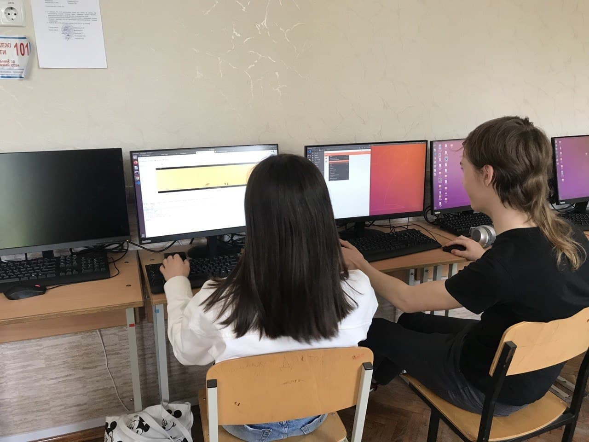

KENGO JS
.png)
ABOUT US

Мы, Супрун Мария и Данила Ильченко, начинающие front end разработчики,изучаем html, css, js. Нас очень интересует данное направление в сфере IT. Мы хотим и дальше здесьразвиваться, а также мы не будем стоять на месте, а будем приобретать новые скилы и расширять границы наших знаний.
ABOUT PROGECT
.png)
При создании нашего проекта мы использовали html, css, js.
Для компиляции всех модулей в единый файл использовался webpack.
Для облегчения совместной работы и отслеживание проекта использовалась система управления проектами и версиями
кода GitHub.
В самом проекте мы использовали ссылки, css анимации для анимирования объектов в игре, функции и многое
другое...

За основу взята игра Dinosaur Game. В нашей игре вместо динозаврика - кенгуру, главное отличие нашей игры от
Dinosaur Game - высота прыжка кенгуру зависит от длительности нажатия на клавишу пробел.
Игра заключается в том, чтобы перепрыгивать кактусы, появляющиеся в случайном порядке и получать очки за
пройденое растояние.